Kawamoto, Shimane: things to do, food and stays
Kawamoto · Shimane
Kawamoto
Highlighted on the Shimane map.

Stay
かわもとおとぎ館
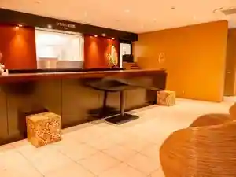
Kawamototogi Kan
Dining
道の駅 インフォメーションセンターかわもと
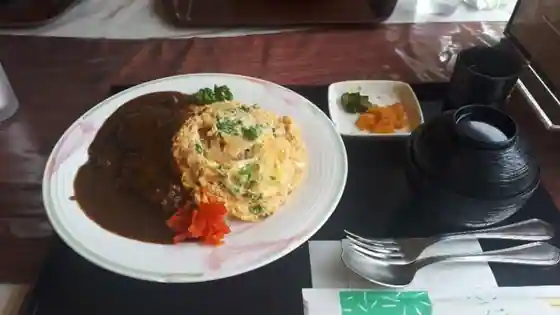
Michi No Eki Infomeshon Center Kawamoto
きたみち庵
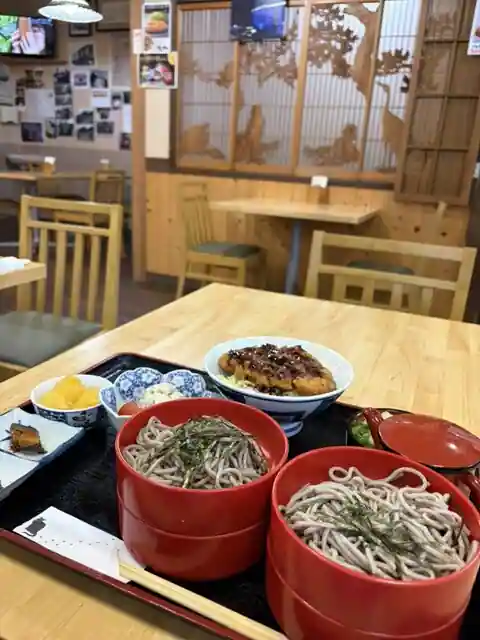
Kitamichi Iori
コインレストランかわもと
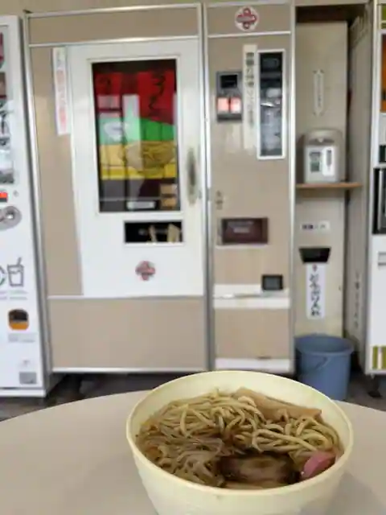
Koin Restaurant Kawamoto
レストラン いんふぉ
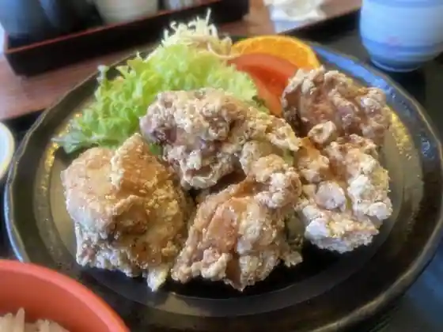
Restaurant Info
福村食堂
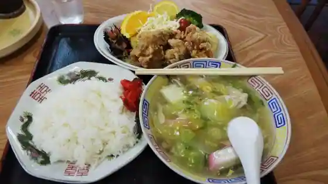
Fukumura Shokudo
かんちゃんお好み鉄板焼
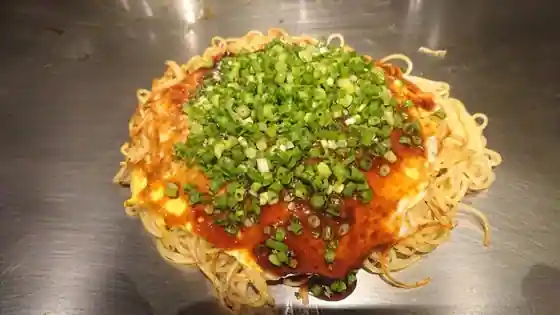
Kanchan'O Konomi Teppanyaki
川本食堂
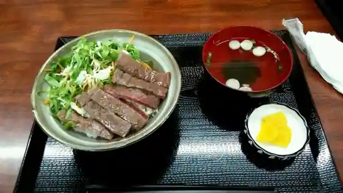
Kawamoto Shokudo
新栄寿し
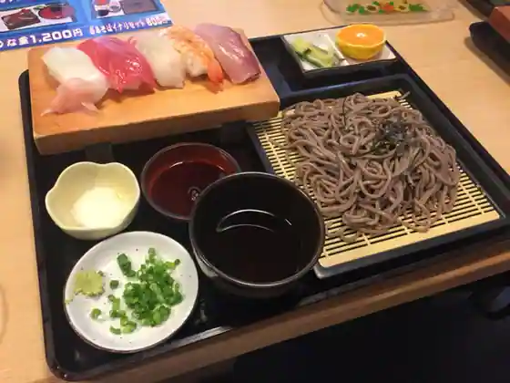
Shin'Ei Hisashi Shi
ゆだに温泉弥山荘
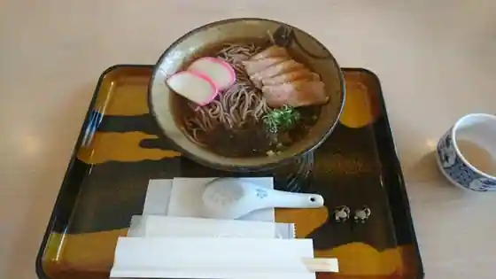
Yudani Onsen Misen So
飯田食堂
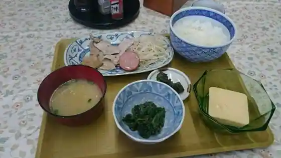
Ida Shokudo
やきとり 洋子
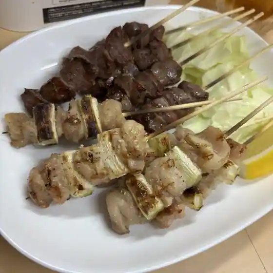
Yakitori Yoko
Ｋ
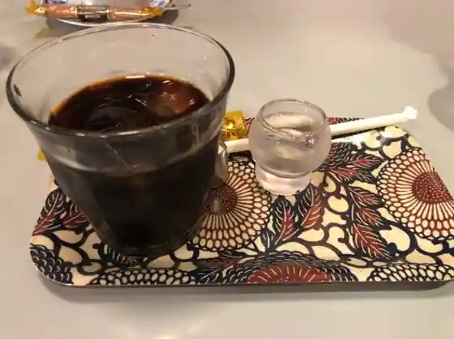
K
春夏秋冬
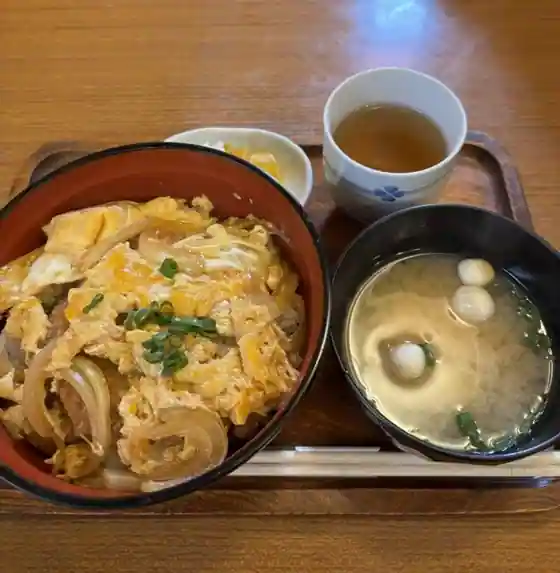
Shunkashuto
ピッコルッソ
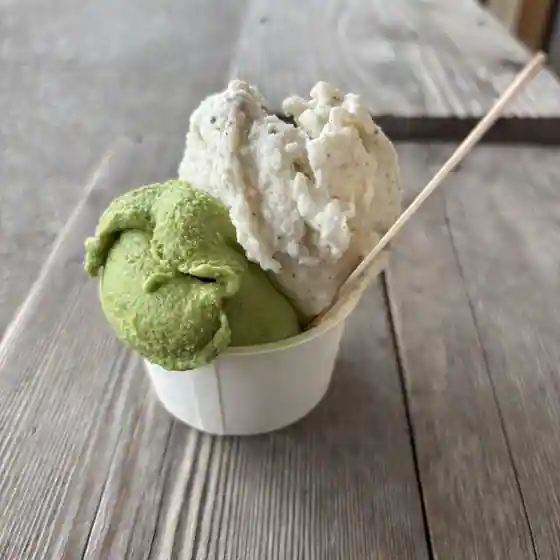
Pikkorusso
カフェ ドゥ ソレイユ
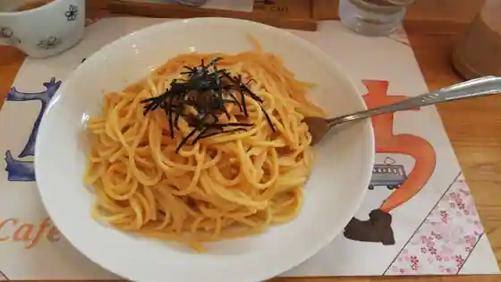
Cafe Dou Soreiyu
とまり木
Tomari Ki
炉ばた焼末広
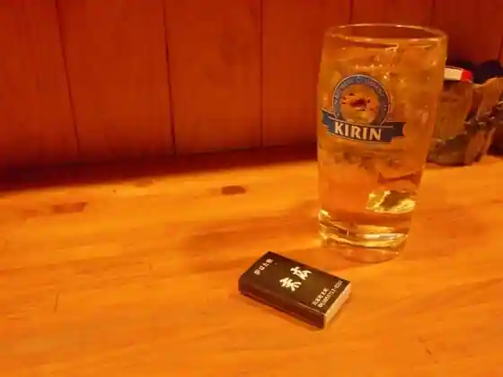
Ro Bata Yaki Suehiro
CAFE神江楽
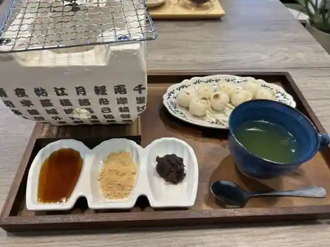
CAFE Kami Ko Raku
寺カフェ プチ・ルポ
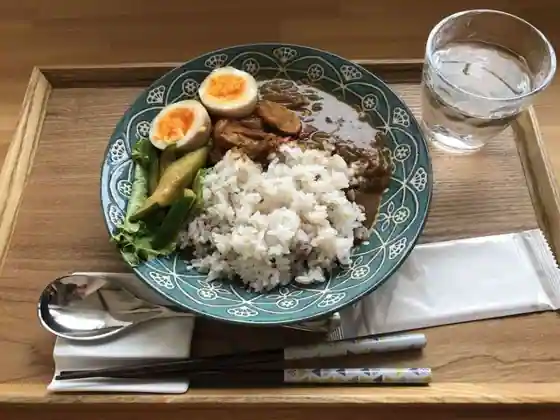
Tera Cafe Puchi Rupo
Sights
Yutani Onsen (Misen So)

Roadside Station Infomeshon Center Kawamoto

Ko no Kawa

Iwami Kagura

Yu Mura Furusato Hall
Kawamototogi Kan
Koinresutoran Kawamoto
Maruyama Castle Ruins
Fukumura Shokudo
Kawamoto Tourism Association
Fureai Park Sasa Yuri
Choko Tera
Ena Festival Kawamoto
Yutani Onsen
Tomari Ki - Pan Toyatsu -
Izumokobaimo
Konpira Park Cherry Blossoms
Kawamoto San Egoma Abura
Soba Tokoro Kitamichi Iori
Tembin Fuigo no Hi
piccolusso
Egoma Oiru
Kawamoto Higashi Bridge
Kafe Do Soreiyu
Kafe Egoma no Mi
Kawamoto Bridge
Ryokan Mikami
Izumokobaimo Festival
Noka Minpaku Yanchan Village
Kawamoto Town Hall